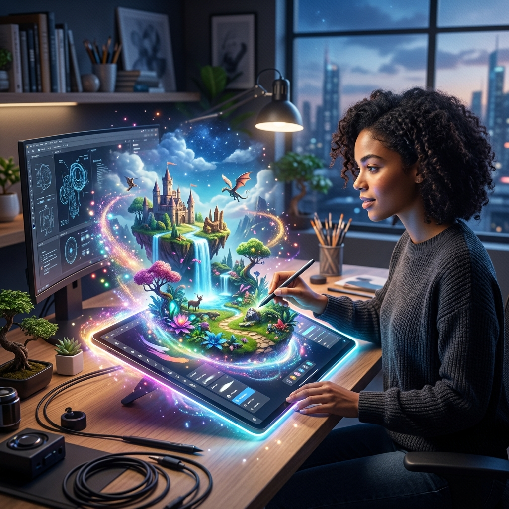

Building New Worlds: How Project Genie is Reimagining Creative Storytelling for Brands

We’ve all seen AI that can write a story or generate an image. But what if you could *walk inside* the story? That is the promise of Project Genie, Google’s latest foray into generative interactive environments. It’s a shift from consuming media to inhabiting it.
What is Project Genie?
Project Genie is a foundation model that can generate playable, interactive 2D and 3D worlds from a single prompt, image, or even a napkin sketch. Unlike a traditional video game engine that requires months of asset creation and coding, Genie "imagines" the physics and the environment in real-time. (Google Labs)
Why This Matters for Your Business
For small to medium-sized businesses, the cost of entry for "immersive marketing" has always been too high. You can’t afford a team of Unity developers to build a custom experience for your brand. Genie changes the math. Imagine your customer describing their dream kitchen and instantly being able to "walk through" it in a world generated by your brand’s AI.
Trending Tasks & Possibilities
- Instant Prototyping: Visualizing architectural concepts as interactive spaces.
- Immersive Training: Creating custom safety or onboarding "games" in minutes.
- Interactive Ad Campaigns: Letting users play inside your brand’s universe.
- Dynamic Storytelling: Building "choose your own adventure" marketing funnels that are visually unique to every lead.
The ROI: Engagement Over Clicks
Traditional ads get a 1% click-through rate if you're lucky. Immersive worlds generated by Genie can keep users engaged for minutes, not seconds. That level of attention is the new currency in 2026.